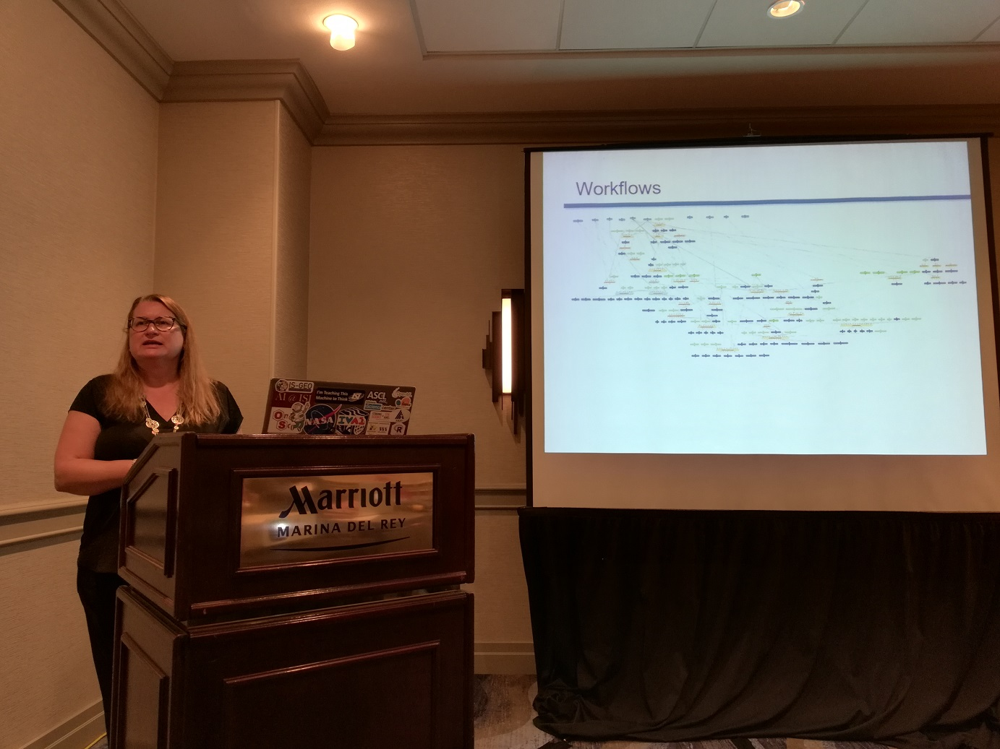
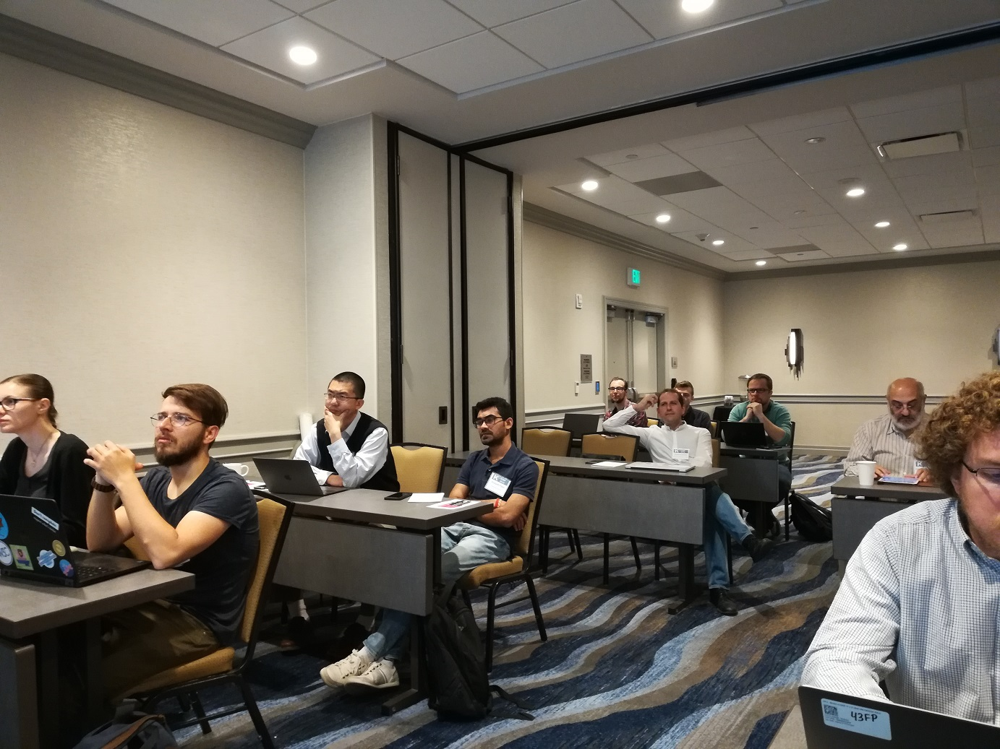

Third International Workshop on Capturing Scientific Knowledge (Sciknow 2019)
Los Angeles, California, USA
http://www.k-cap.org/2019/
Contents
- Previous editions
- Workshop Goals
- Workshop Gallery
- Schedule and Pointer to Papers
- Submissions
- Important Dates
- Organizing Committee
- Program Committee
Previous editions of Sciknow
- Sciknow 2015
- Sciknow 2017 (See the Workshop report)
Workshop Goals
The aim of SciKnow 2019 is to bring together researchers interested in representing and capturing knowledge about science so that it can be used by intelligent systems to support scientific research and discovery.
From the early days of Artificial Intelligence, researchers have been interested in capturing scientific knowledge to develop intelligent systems. A variety of formalisms are used today in different areas of science. Ontologies are widely used for organizing knowledge, particularly in biology and medicine. Process representations are used to do qualitative reasoning in areas such as physics and chemistry. Probabilistic graphical models are used by machine learning researchers, e.g., in climate modeling. Recent work has looked at subsymbolic models for capturing scientific models from the literature.
In addition to enabling more advanced capabilities for intelligent systems in science, capturing scientific knowledge facilitates knowledge dissemination and open science practices. This is increasingly important to enable reusing scientific knowledge across scientific disciplines, businesses and the public.
Despite recent advances, scientific knowledge is complex and poses significant challenges for knowledge capture. This workshop will provide a forum to discuss, envision and expand existing forms of scientific knowledge representation and dissemination; and existing systems that use them. There are many research challenges in open sharing and reuse of scientific knowledge that need to be addressed in future research.
Workshop Gallery
Keynote by Yolanda Gil  Workshop participants (1)  Workshop participants (2)
Schedule and Pointer to Papers
| 8:00-9:00 | Coffee and registration |
| 9:00-9:10 | Welcome and Introductions |
| 9:10-10:00 | Invited talk: Yolanda Gil Title: Capturing Hypotheses and Scenarios in Scientific Research |
| 10:00-10:30 |
Session 1 : Workflows (full papers 15 min + 5 min questions, position papers 8 min + 2 min questions)
|
| 10:30-11:00 | Coffee break |
| 11:00-11:30 |
Session 2 : Applications (full papers 15 min + 5 min questions, position papers 8 min + 2 min questions)
|
| 11:30-11:50 |
Session 3 : Knowledge for Evaluation (full papers 15 min + 5 min questions, position papers 8 min + 2 min questions)
|
| 11:50-12:30 |
Session 4 : Data (full papers 15 min + 5 min questions, position papers 8 min + 2 min questions)
|
| 12:30 | Wrap up and workshop closing |
Submissions
Major topics of interest for this workshop include:
- Capture of scientific knowledge:
- Successful knowledge capture and representation formalisms are used in a variety of scientific domains, what are their key features and merits?
- Scientific knowledge is inherently complex and requires significant effort to capture. What are effective approaches to model and to acquire scientific knowledge?
- Representation of scientific knowledge:
- Given the variety of representation formalisms for scientific knowledge, how can they be combined to enable more advanced capabilities?
- What approaches can support the uncertainty and evolution inherent in scientific models?
- (Re)use of scientific knowledge:
- Imagine what scientific breakthroughs might be enabled with improved representational schema of existing scientific knowledge, and of course the subsequent capture of additional scientific knowledge.
- What are effective approaches that enable open sharing, dissemination, and reuse of scientific knowledge?
Submissions can be made in the following categories:
- Report papers (up to 6 pages): Overviews or summaries of past work on approaches to represent and capture scientific knowledge.
- Research papers (up to 6 pages): Novel results of research on scientific knowledge representation or capture.
- Position papers (up to 4 pages): Discussion on issues concerning the representation, capture, and dissemination of scientific knowledge, particularly to facilitate cross-disciplinary integrative science.
- Challenge papers (up to 4 pages): Specific scenarios that describe the benefits to science if the limitations identified are overcome.
Submissions should be managed through Easychair. At least one author of each accepted paper is expected to attend the workshop.
Accepted papers will be published with the CEUR Workshop Proceedings (CEUR-WS.org), listed by DBLP.
Open review: Reviewers and authors are encouraged to participate in an open review process to make the discussion as transparent as possible.
Important Dates
- Submission deadline:
September 27October 6, 2019. - Notifications to authors:
October 8October 20, 2019. - Workshop: November 19, 2019.
Organizing Committee
- Daniel Garijo, University of Southern California
- Milan Markovic, University of Aberdeen
- Paul Groth, University of Amsterdam
- Idafen Santana, Instituto Canario de Estadistica
- Khalid Belhajjame, University Paris-Dauphine
Program Committee
- Derek Sleeman, University of Aberdeen
- Yolanda Gil, Information Sciences Institute, University of Southern California
- Oscar Corcho, Universidad Politecnica de Madrid
- Olga Ximena Giraldo, Universidad Politecnica de Madrid
- Silvio Peroni, University of Bologna
- Anita de Waard, Elsevier
- Marieke van Erp,KNAW Humanities Cluster
- Amrapali Zaveri,Maastricht University
- Martine de Vos, Utrecht University